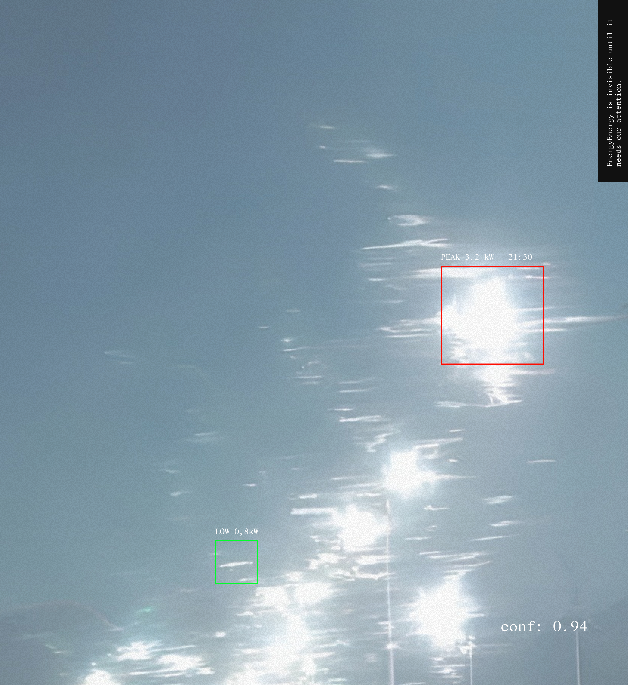
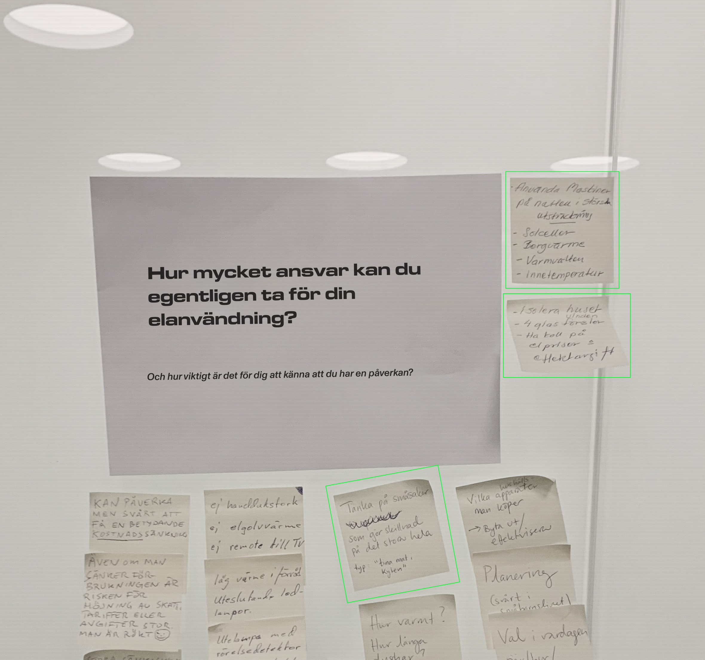
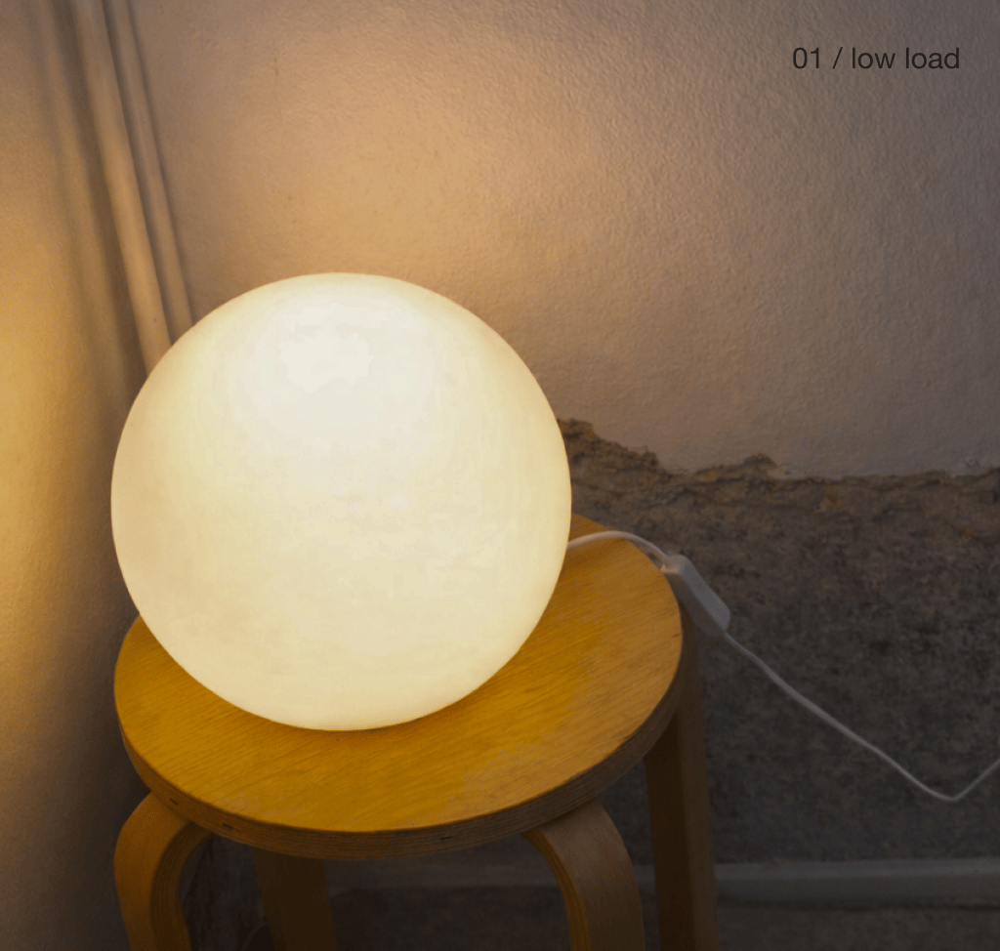

How do people understand energy, cost and climate impact in everyday life?
Energy is invisible until it needs our attention. This research project asked what it would take for people to actually understand (and act on) their energy use in real time.
Working at KTH with Uppsala University, Ellevio, and Bright, funded by the Swedish Energy Agency, the project explored how design can help households navigate new pricing models - including power-based tariffs - without requiring anyone to become an energy expert.
Rather than treating flexibility as a technical problem, the project reframed it as a question of perception: how do people understand energy, cost, and climate impact within everyday life? Through interviews, workshops, and usability testing with consumers and prosumers, I developed and tested concepts spanning digital interfaces and ambient physical visualisations.

My contribution focused on user research - facilitated workshops and concept development, translating energy systems into design solutions that fit around everyday life rather than demanding changes to it. Key findings from the research:
These insights shaped the concept development phase, designed to meet users where they actually are. After extensive sketching and iteration, two concepts emerged: a mobile app and an ambient physical object. The mockup was designed to be informative without feeling heavy.
One insight was that some users didn't want to depend on a screen for awareness of load. This led to a second prototype - a lamp that communicates local grid load through light, making energy information ambient and visible in the home rather than something to actively check.
